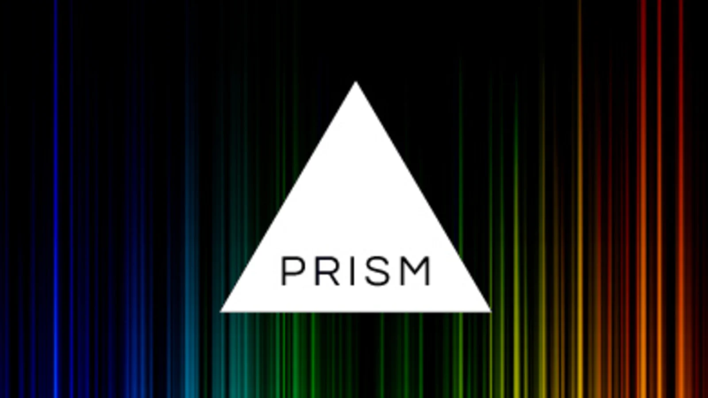

Home
Skills
Projects
Blog
More Info

How to use PrismJS in ReactJS
January 14, 2023
web
react
Today, we are going to see how to use PrismJS in a ReactJS application. It is a very popular syntax highlighting Javascript library. Used in various popular websites to display code.